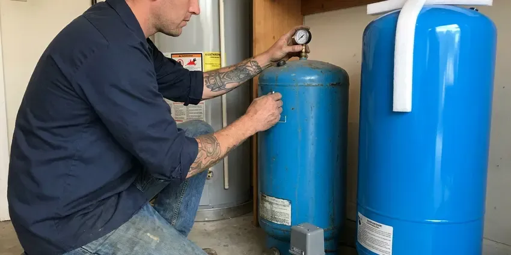

Tankless Water Heater Replacement in Burnsville, MN
Worn-out tankless unit throwing error codes? We replace tankless water heaters across Burnsville, MN with properly sized, scale-protected units that provide steady hot water.
- Manufacturer Warranty Registration
- Licensed Gas Line Technicians
- Navien and Rinnai Units
- Code Approved Venting
Tankless Throwing Codes? Replace It in Burnsville, MN.
Our techs carry common tankless models and venting kits, so most swaps wrap up in a single visit.
Tankless Replacement Across Burnsville, MN
CNV Plumbing replaces failing tankless water heaters with condensing and non-condensing units sized to your home's real flow demand. We check gas, venting and hardness first. That way the new heater is not starved for fuel or choked by scale, which are the two most common reasons we see early failures.
Our expertise includes:
- Condensing unit installs with PVC venting and condensate neutralizers
- Haul-away of old water heaters.
- Scale prevention with isolation valves and inline filter options

Additional Plumbing Replacement Services in Burnsville, MN
When repairs are no longer enough, our replacement services in Burnsville, MN deliver modern, efficient equipment installed right.


Customers
Why Choose CNV Plumbing for Tankless Water Heater Replacement in Burnsville, MN?
A tankless heater is only as good as its gas supply and venting. Both get measured before the quote, so the unit fires at full output under heavy demand. Full fire, full flow.
- Long-Term Value, One tankless can last as long as two tank heaters, which offsets the higher price.
- Efficiency, No standby loss means less gas burned keeping water hot that nobody is using.
- Lower Gas Bills, A tankless heats water only when a tap opens, which trims Minnesota utility bills compared with a tank.
Citywide Coverage
Plumbing layouts differ across Burnsville, from condos with interior closets to homes with garage walls. Our techs know where the gas and vent lines usually run in each type of house, which speeds up the job. Every job meets local code.
Experienced Team
Every major tankless brand does a few things its own way, from error codes to mounting brackets to vent adapters. We know those quirks. The install goes cleanly because of it.
Safety-First Approach
Tankless safety starts with the vent termination. Manufacturers set minimum distances from windows, doors and air intakes, and local Minnesota code may add its own rules on top. Each termination gets measured.
Trusted Certified Burnsville Plumbing Services Professionals
At CNV Plumbing, we are proud to offer certified plumbing services throughout Burnsville, MN. Credentials matter in this trade. Every repair, install and maintenance visit follows strict safety and quality rules, and the plumbers doing the work carry recognized industry credentials.
Call Us Now PHCC Plumbing Contractor Recognition
PHCC Plumbing Contractor Recognition Better Business Bureau (BBB) Accreditation
Better Business Bureau (BBB) Accreditation Angi Certified Pro
Angi Certified Pro ISO 9001 Quality Management Certification
ISO 9001 Quality Management CertificationTankless Units We Replace in Burnsville, MN
Navien Venting and Install in Burnsville
Navien allows 2-inch or 3-inch PVC venting on its condensing units, with maximum lengths that drop as you add elbows. We stay inside those limits. Go past them and the warranty suffers.

Commercial Tankless Racks in Burnsville, MN
Restaurants and salons run tankless racks hard. Four units together can pull over 600,000 BTU, which means checking gas pressure with all of them running. We work after hours when needed.
Like-for-Like Tankless Swaps in Burnsville
A cracked heat exchanger or a failed control board on an older tankless is usually not worth repairing past the ten-year mark. We match the new unit to your gas line, vent type and mounting spot whenever we can. Plan on four to six hours.
Tank to Tankless Conversion in Burnsville, MN
Converting from a tank to tankless takes a full day in most homes. The work usually includes a larger gas line, new venting through a wall or roof, and a new spot on the wall for the unit. The old flue gets capped.
Point-of-Use Electric Tankless in Burnsville
Point-of-use electric tankless heaters under a sink are a different animal from whole-house units. A small under-sink unit needs one 20 or 30 amp circuit and suits a distant bath or break room. Most take under two hours.
Commercial Tankless Replacement in Burnsville
Cascade controls on a commercial rack decide which unit fires first, and after one unit is replaced they need rebalancing. Skip that and the new unit wears out first. We also set a descaling schedule.
Gas Line Testing on Tankless Installs in Burnsville, MN
Every gas connection on a tankless gets a soap test and a manometer reading at full fire before we leave the house. A line that holds pressure at rest can still sag under full load. We test both.

Commercial Tankless Water Heater Replacement in Burnsville, MN
Commercial tankless setups in restaurants and offices often use two or more units on a manifold, with a controller that splits the load. We replace failed units without shutting down the rest. Hand sinks and dish stations have to hit the temperatures health code requires.
Tankless Water Heater Replacement Near Me in Burnsville, MN
Our service area covers all of Burnsville, MN, so a plumber who knows tankless is never far from your door. We get there fast. One trip is usually enough.
Tankless problems tend to show up at the worst time of day. Our techs are close by and can tell you on the first visit whether a repair or a replacement makes more sense for a unit that age. Warranty registration is on us.
CNV Plumbing at a Glance
- Licensed and insured plumbers serving Burnsville, MN
- 24/7 emergency service with same-day scheduling
- Upfront, flat-rate pricing before work begins
- 4.8-star rated by 501+ Minnesota customers
Burnsville Map
Burnsville Information
- Population
- 64,772
- Area codes
- 612/507/320
- Service area
- Burnsville and communities within 40 miles
- Nearby
- Apple Valley, Bloomington, Lakeville, Eagan
Private wells are widespread, so homeowners around Burnsville should test for hardness and iron before choosing a treatment system. Scale builds inside tankless heat exchangers over time, so a properly sized replacement with flush valves protects homes in Burnsville, MN from early failures.
Expert Services
Reach out to CNV Plumbing for honest, reliable plumbing from people who know the trade in Burnsville, MN.
Our Specialized Plumbing Services in Burnsville, MN
At CNV Plumbing, we handle the full list of plumbing services across Burnsville, MN. From leak detection to full system installs, our team works fast and charges fair prices on homes and commercial properties alike. Explore our core services below:


Our Tankless Install Steps in Burnsville, MN
We keep the process easy to follow from the first call to the final combustion test.
Schedule a Visit
Call CNV Plumbing at (612) 712-9569 to book an on-site look. You get a written estimate for the replacement.
Pick the Model
We help you choose the best-fitting unit based on fuel type, flow rate and efficiency.
Install to Code
Our licensed plumbers remove the old unit and install the new one, with gas, water and vent connections to Minnesota code.
Frequently Asked Questions About Tankless Water Heater Replacement in Burnsville
Most tankless replacements in Burnsville, MN cost $3,000 to $6,000 installed. The spread comes from unit capacity and brand, and from whether the job is a straight swap or a conversion from a tank with new gas and vent work. We quote in writing first.
Usually, yes. The permit confirms that the gas line, venting and electrical connections meet local building and safety code, and the inspector signs off after. We file it.
Clear a path to the heater and a few feet around it. Pets and kids should stay clear while the gas and water are off for a few hours. We take care of draining and disconnecting.
Yes, and it is one of the most common upgrades we do. Expect a larger gas line and new venting, plus an outlet for the unit, so plan on a full day. Professional installation matters here.
We do not recommend it. You are dealing with gas sizing, vent clearances and condensate, and errors there risk CO or a voided warranty. Most brands require a licensed installer.
Gas lines, electrical wiring, water connections and venting all come into play. A small error in any of them can mean a gas leak, a carbon monoxide problem or a unit that will not stay lit, and it can void the warranty. Use a licensed plumber.
Often, yes, especially on a conversion. A typical tankless needs a 3/4-inch line and enough meter capacity for 199,000 BTU plus your other gas appliances.
Four to eight hours for a tankless-to-tankless swap. A tank conversion often takes all day, with new gas and vent work and sometimes electrical. You will know how long before we start.
What Our Customers Say About Our Plumbing Experts

Emily R.
The shutoff valve under our kitchen sink snapped off in my hand on a Sunday morning. CNV Plumbing had someone out by early afternoon. He replaced both angle stops with quarter turn valves and showed me where our main shutoff was, which I honestly did not know.
Plumbing Repair · Bloomington, MN
Angela D.
Our sump pump quit during a storm and the water was an inch from the basement carpet. CNV Plumbing put in a new pump with a battery backup that same evening. We have had two heavy rains since. It kicked on both times.
Sump Pump · Edina, MN
Nathan E.
Our tankless heater kept throwing an error code and shutting off mid shower. The tech flushed the heat exchanger, which was full of scale, and replaced a bad flow sensor. Hot water has been steady for half a year now.
Water Heater Repair · Apple Valley, MNPatricia H.
We had a slab leak that two other companies could not find. CNV Plumbing located it in under an hour with a listening device. They rerouted the line through the attic instead of breaking up the floor, so we kept our kitchen tile.
Slab Leak Repair · Bloomington, MN
Greg S.
I manage a small strip center with six tenants. CNV Plumbing handles our annual backflow testing and fixed a recurring clog in the shared sewer line that had been backing into the nail salon. Their reports come in clean and on time.
Commercial Plumbing · Eden Prairie, MNPaul B.
Our pit pump ran nonstop even in dry weather. The plumber found the check valve was stuck open, so the same water kept cycling back into the pit. New valve, new float switch, done in an hour. It runs quiet now.
Sump Pump · Edina, MN